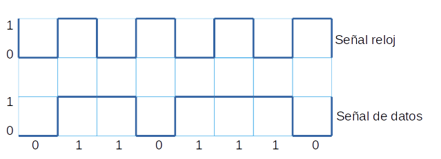
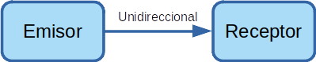

Tipos y técnicas de transmisión de datos¶
Según la sincronización del emisor y al receptor, podemos clasificar la transmisión de datos en los siguientes tipos
Transmisión síncrona. Utilizamos una señal periódica que indica los instantes en los que eta accesible cada dígito. Normalmente el emisor envía al receptor la señal de sincronización junto con la señal de datos. Es decir el emisor y el receptor están sincronizados
Transmisión asíncrona. Una transmisión es asincrona cuando el proceso de sincronización entre el emisor y el receptor se realiza en cada palabra de código transmitida. Por ejemplo, 1 bit start, 8 bits carácter y 3 bits stop, en este caso el rendimiento (8/14)~60%
{kind=link}
Además podemos clasificarla como digital y analógica
- Transmisión analógica. La función continua en el tiempo y puede tomar cualquier valor contiguo dentro del rango que permite el medio de transmisión.
- Transmisión digital. La funciones discretas en el tiempo y solo puede tomar varios valores dentro de un rango.
Si tomamos la direccionalidad de ta transmisión, podemos clasificar la transmisión de datos en los siguientes tipos
Simplex. La transmisión tienen lugar en un solo sentido, (TV, rádio)
Semidúplex (half-dúplex). La transmisión puede tener lugar en ambos sentidos, es decir que puede ser bidireccional, pero no puede ser simultanea (radioaficionados)

Dúplex (full - dúplex). Transmisión bidireccional y además simultanea, es decir, es decir puede tener lugar en ambos sentidos y al mismo tiempo. (Teléfono)
{kind=link}
{kind=link}
Según el modo de transmisión tendríamos:
- Serie. Los datos se transmiten por un solo bit por un solo canal de transmisión
- Paralelo. Consiste en la transmisión simultanea de N bits